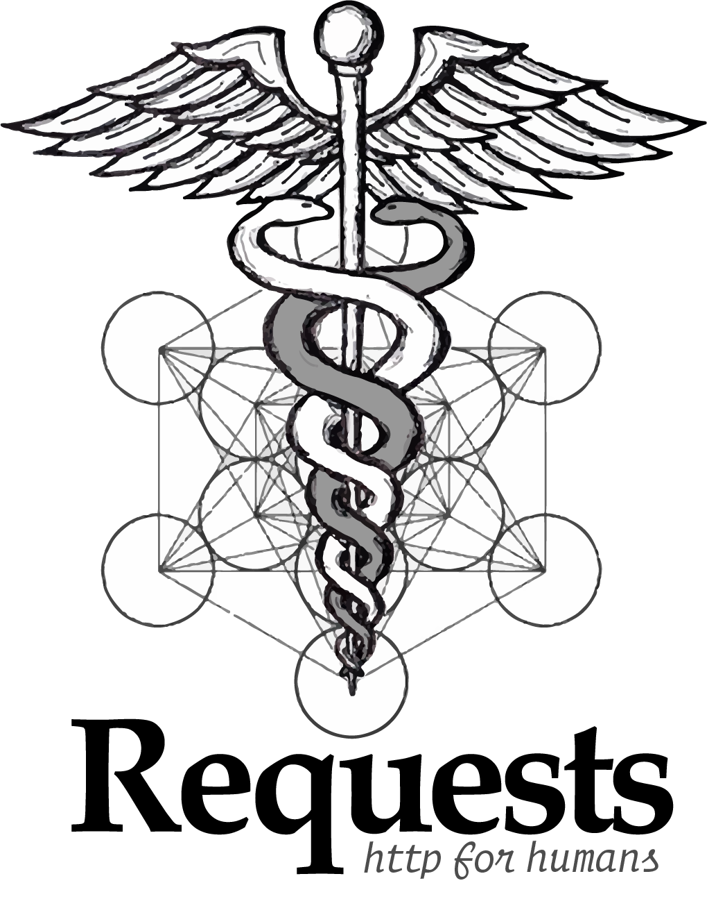

О себе
Full-stack QA Engineer с опытом более 8 лет в тестировании веб-приложений с различной архитектурой (монолитной и микросервисной). Также присутствует опыт в тестировании мобильных приложений. В автоматизации тестирования специализируюсь на Python (PyTest, Selenium, Playwright, Requests). Имею опыт внедрения автотестов в CI/CD и оптимизации процессов тестирования
Тех. Стек
Автоматизация тестирования:
 Python
Python
 PyTest
Pytest-xdist
PyTest
Pytest-xdist
 Selenium
Playwright
Selenium
Playwright

Requests
API тестирование:
 REST API
REST API
 Postman
cURL
Postman
cURL
Инструменты:
 Git
Git
 Docker
Docker
 Kubernetes
Kubernetes
 Xcode
Android Studio
Xcode
Android Studio
 Kafka Tool
Kafka Tool
 Graylog
Graylog
 Jenkins
Jenkins
Типы тестирования:
Функциональное
Интеграционное
UI
API
Базы данных:
 SQL (PostgreSQL)
SQL (PostgreSQL)
Отчётность:
Allure Report
TestRail
 Jira
Jira
Среда:
 Linux CLI
Linux CLI
Методологии:
Agile
Scrum
Shift-left
Опыт работы
Full-stack QA Engineer
Helios (fintech) Ноябрь 2021 — настоящее время- Участвовал в разработке и внедрении фреймворка автоматизации UI-тестирования (Python, PyTest, Playwright/Selenium)
- Инициировал и внедрил обязательный прогон автотестов перед merge в основную ветку, что снизило количество дефектов в продакшене
- Реализовал параллельный запуск тестов, что сократило время выполнения тестов более чем в 2 раза и ускорило релизы
- Проводил функциональное тестирование веб- и мобильных приложений
- Разрабатывал тестовую документацию и отчёты (тест-планы, чек-листы, баг-репорты)
Full-stack QA Engineer
Delivery Club (foodtech) Июнь 2020 — Ноябрь 2021- Отвечал за тестирование критически важных бизнес-компонентов — сервисов обработки заказов и платежей
- Автоматизировал тестирование микросервисов (Python, PyTest, Requests)
- Интегрировал автотесты нового платёжного сервиса в существующий фреймворк
- Проводил функциональное и интеграционное тестирование
- Разрабатывал тестовую документацию и отчёты (тест-планы, чек-листы, баг-репорты)
Старший инженер по тестированию
МТТ (telecom) Август 2017 — Май 2020- Проводил тестирование веб-приложений и API
- Участвовал во внедрении нового личного кабинета
- Разрабатывал тестовую документацию и отчёты (тест-планы, чек-листы, баг-репорты)
Инженер по тестированию ПО
ЕАЕ-консалт (consulting) Октябрь 2016 — Июнь 2017- Тестировал веб- и мобильные приложения
- Выполнял регрессионное тестирование
- Описывал тест-кейсы и заводил дефекты (TFS)
Программист 1С
АВК-система (franchisee) Август 2015 — Апрель 2016- Выполнял несложные задачи по автоматизации рабочего процесса предприятий в сфере бухгалтерского учёта
Образование
Волгоградский государственный технический университет (ВолгГТУ)
Факультет «Автомобиле- и тракторостроение» — 2006–2011